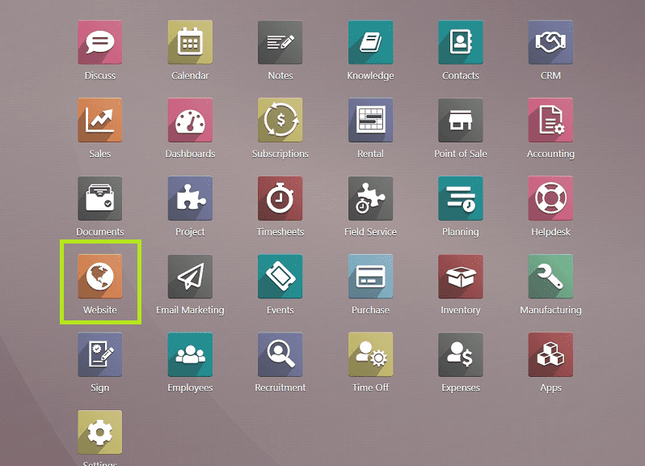

ODOO
QUE ES?
Es un software de gestión empresarial, es decir, un ERP de código abierto, el cual integran múltiples aplicaciones para la administración de diferentes áreas de un negocio algunos ejemplos como la contabilidad, las ventas, el inventariado, los recursos humanos, entre otras muchas más funciones o nos muestran una flexibilidad increíble hacia las empresas de personalizado y amo dándose a las necesidades de estas
REQUISITOS WINDOS/LINUX
Procesador: 4 núcleos mínimo. Memoria RAM: 8 GB (pequeñas empresas), 16 GB+ (grandes empresas). Almacenamiento: SSD de 50 GB mínimo. Base de datos: PostgreSQL 15+. Sistema operativo: Windows: Windows Server 2019 o superior. Linux: Ubuntu 22.04 LTS recomendado